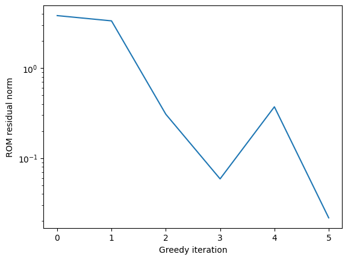
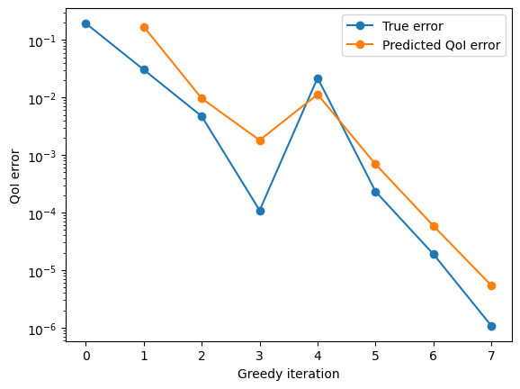

Greedy training tutorial#
In this tutorial you will learn the basics of contructing a greedy training workflow using romtools
https://pressio.github.io/rom-tools-and-workflows/romtools/workflows/greedy/run_greedy.html
#First, let's import the relavant modules:
import romtools
import numpy as np
from matplotlib import pyplot as plt
import sys
import os
sys.path.append('adr_1d/')
from adr_1d import advectionDiffusionProblem
module 'mpi4py' is not installed
#First, we will import the FOM model.
#Here, we will just use the advection diffusion FOM we setup in the external model tutorial
from ipynb.fs.full.external_qoi_model import adrExternalRomToolsQoiModel
myFom = adrExternalRomToolsQoiModel()
# Now, let's setup our parameter space. We will use the parameter space we constructed in the parameter_space
from ipynb.fs.full.parameter_space import BasicParameterSpace
myParameterSpace = BasicParameterSpace()
/home/runner/work/rom-tools-and-workflows-demos/rom-tools-and-workflows-demos/docs/source/notebooks
# Now, we need to setup our ROM. For greedy, we need a QoIModelWithErrorEstimate.
# we haven't make this type of model in our tutorial series, and will do so now.
#As a starting point, let's import the ROM model we made in the model_builder tutorial
from ipynb.fs.full.model_builder import adrRom
#We now need to add a compute_qoi method and a compute_error_estimate_method:
class adrQoiRomWithErrorEstimate(adrRom):
def compute_qoi(self, run_directory: str, parameter_sample: dict):
# Note that compute_qoi is always called after run_model
solution = np.load(run_directory + '/solution.npz')
u = solution['u']
x = solution['x']
dx = x[1] - x[0] #we use a uniform grid
ux_at_right_edge = (0. - u[-1])/dx
return ux_at_right_edge
# Now we will add a method for computing an error estimate.
# As an error estimate, we will use the norm of the FOM residual evaluated about the ROM solution
def compute_error_estimate(self, run_directory: str, parameter_sample: dict):
rom_data = np.load(self.offline_directory_ + '/rom_data.npz')
solution = np.load(run_directory + '/solution.npz')
u = solution['u']
residual = (parameter_sample['c']*rom_data['Ac'] - parameter_sample['nu']*rom_data['Ad'])@u - rom_data['f']
residual_norm = np.linalg.norm(residual)
return residual_norm
#Now we will construct a model_builder. We will use the one we initiated in the model_builder tutorial
from ipynb.fs.full.model_builder import AdrRomModelBuilder
myIntrusiveFom = advectionDiffusionProblem(nx=33)
myRomModelBuilder = AdrRomModelBuilder(myIntrusiveFom,adrQoiRomWithErrorEstimate)
#Now we can run the greedy workflow!
if __name__ == "__main__":
greedy_work_dir = os.getcwd() + '/greedy_example/'
tolerance = 1.e-6 #tolerance on greedy algorithm
testing_sample_size = 10 #sample size on which to evaluate greedy ROM
romtools.workflows.greedy.run_greedy(myFom,myRomModelBuilder,myParameterSpace,greedy_work_dir,
tolerance,testing_sample_size)
Greedy iteration # 0
/home/runner/work/rom-tools-and-workflows-demos/rom-tools-and-workflows-demos/rom-tools-and-workflows/romtools/workflows/greedy/run_greedy.py:235: RuntimeWarning: invalid value encountered in scalar divide
qoi_error = np.linalg.norm(rom_qoi - fom_qoi) / np.linalg.norm(fom_qoi)
Greedy iteration # 1
Greedy iteration # 2
Greedy iteration # 3
Greedy iteration # 4
Greedy iteration # 5
Greedy iteration # 6
Greedy iteration # 7
Greedy iteration # 8
Greedy iteration # 9
Greedy iteration # 10
Traceback (most recent call last):
File "/home/runner/work/rom-tools-and-workflows-demos/rom-tools-and-workflows-demos/docs/source/notebooks/adr_1d//adr_1d_rom.py", line 32, in <module>
u = adr_problem.solve(params[0],params[1])
File "/home/runner/work/rom-tools-and-workflows-demos/rom-tools-and-workflows-demos/docs/source/notebooks/adr_1d//adr_1d_rom.py", line 22, in solve
solution = np.linalg.solve(self.A_r_,self.f_r_)
File "/opt/hostedtoolcache/Python/3.10.14/x64/lib/python3.10/site-packages/numpy/linalg/_linalg.py", line 410, in solve
r = gufunc(a, b, signature=signature)
File "/opt/hostedtoolcache/Python/3.10.14/x64/lib/python3.10/site-packages/numpy/linalg/_linalg.py", line 104, in _raise_linalgerror_singular
raise LinAlgError("Singular matrix")
numpy.linalg.LinAlgError: Singular matrix
---------------------------------------------------------------------------
FileNotFoundError Traceback (most recent call last)
Cell In[4], line 6
4 tolerance = 1.e-6 #tolerance on greedy algorithm
5 testing_sample_size = 10 #sample size on which to evaluate greedy ROM
----> 6 romtools.workflows.greedy.run_greedy(myFom,myRomModelBuilder,myParameterSpace,greedy_work_dir,
7 tolerance,testing_sample_size)
File ~/work/rom-tools-and-workflows-demos/rom-tools-and-workflows-demos/rom-tools-and-workflows/romtools/workflows/greedy/run_greedy.py:192, in run_greedy(fom_model, rom_model_builder, parameter_space, absolute_greedy_work_directory, tolerance, testing_sample_size, random_seed)
190 rom_model.populate_run_directory(rom_run_directory,parameter_dict)
191 rom_model.run_model(rom_run_directory,parameter_dict)
--> 192 error_indicators[counter] = rom_model.compute_error_estimate(rom_run_directory,parameter_dict)
194 rom_time += time.time() - t0
196 sample_with_highest_error_indicator = samples_left[la.argmax(error_indicators)]
Cell In[3], line 23, in adrQoiRomWithErrorEstimate.compute_error_estimate(self, run_directory, parameter_sample)
21 def compute_error_estimate(self, run_directory: str, parameter_sample: dict):
22 rom_data = np.load(self.offline_directory_ + '/rom_data.npz')
---> 23 solution = np.load(run_directory + '/solution.npz')
24 u = solution['u']
25 residual = (parameter_sample['c']*rom_data['Ac'] - parameter_sample['nu']*rom_data['Ad'])@u - rom_data['f']
File /opt/hostedtoolcache/Python/3.10.14/x64/lib/python3.10/site-packages/numpy/lib/_npyio_impl.py:455, in load(file, mmap_mode, allow_pickle, fix_imports, encoding, max_header_size)
453 own_fid = False
454 else:
--> 455 fid = stack.enter_context(open(os.fspath(file), "rb"))
456 own_fid = True
458 # Code to distinguish from NumPy binary files and pickles.
FileNotFoundError: [Errno 2] No such file or directory: '/home/runner/work/rom-tools-and-workflows-demos/rom-tools-and-workflows-demos/docs/source/notebooks/greedy_example//rom_iteration_10/run_18/solution.npz'
#Let's check how some statistics for the workflow.
#Greedy will save out a file called greedy_stats.npz in the work directory with information on convergence
stats = np.load(greedy_work_dir + '/greedy_stats.npz')
print("Stored values are: ", list(stats.keys()))
Stored values are: ['max_error_indicators', 'qoi_errors', 'predicted_qoi_errors', 'training_samples', 'fom_time', 'rom_time', 'basis_time']
#Let's look at a plot of the max_error_indicator vs iteration:
plt.plot(stats['max_error_indicators'])
plt.yscale('log')
plt.xlabel(r'Greedy iteration')
plt.ylabel(r'ROM residual norm')
plt.show()

#Now lets look at the "true QoI error" computed after each greedy iteration and compare it to our predicted QoI error
# Note that the predicted QoI error is not tabulated at the first iteration
iterations_for_predicted_errors = np.arange(1,stats['predicted_qoi_errors'].size+1)
plt.plot(stats['qoi_errors'],'-o',label='True error')
plt.plot(iterations_for_predicted_errors,stats['predicted_qoi_errors'],'-o',label='Predicted QoI error')
plt.yscale('log')
plt.xlabel(r'Greedy iteration')
plt.ylabel(r'QoI error')
plt.legend()
plt.show()
